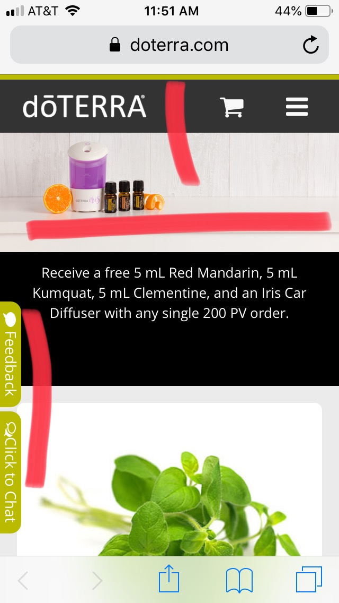
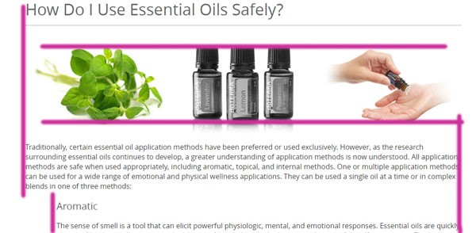
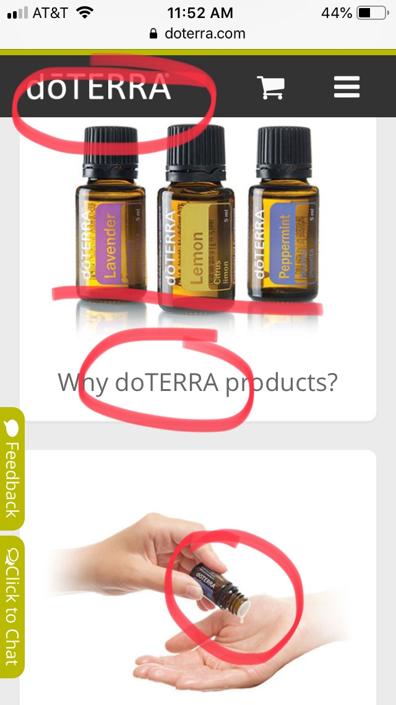
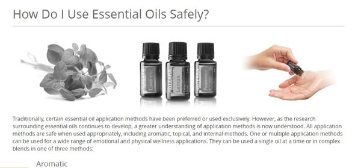
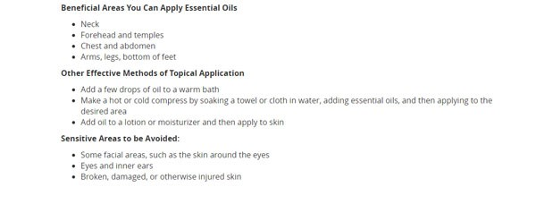

doterra.com
Design Principles
Proximity — Enrique Sanchez
DoTerra has a very good way of grouping elements in their site. One interesting example is the banner at the top of the picture, The picture shows products sold by the company, mixed with elements that they use to create them. They put them together and the reader will know that both elements are contected. Otherwise, the oranges diplayed in the picture would look very odd and out of place. Also, they put the oil bottles right underneath the logo of the company. That way, the reader will associate the bottles to the company and will remember who makes these products. This is a way to group elements.
Alignment — Idianis Ortiz
DoTERRA applied a good alignment in its design. All of the sentences were perfectly aligned not only at the beginning of the sentences but also at the end. They also used a flush right margin to make more emphasis on the second paragraph. On the other hand, their images were also aligned from top to the bottom.
Repetition — Enrique Sanchez
It is very interesting how doTerra adds its name to different parts of the website so that the reader will remember the name. Also, it uses the same colors throughout the site, so that when the reader sees those colors, they will associate them with the brand, and that will attract more costumers. They also show the bottles of their product often so that the viewer will have them in mind and will also become a costumer.
Contrast — Idianis Ortiz
Example 1

To create contrast, doTERRA used a colored picture showing that some drops were getting into someone’s hands and a black and white image to create differentiation between the images. The contrast that they used for that design was based on color.
Example 2
From the previous example, we can see that doTERRA used contrast in the font too. They used big letters for the title and smaller letters for the rest of the information to create more impact. They also combine bold and not bold letters to create more contrast.
Typography — Chris Leavitt
Site Purpose Statement
Provide quality oils that are essential to life.
Target Audience
- Age: 30's-60's
- Occupation: Stay at home mom/dad. These people also enjoy natural remedies for things like common colds and the flu. In their spare time, they often find ways to improve the household such a putting essential oils in an air diffuser.
- Income: $30,000-$75,000
- Other: These people love their families! They would spend all day with them if they could. Everything from cooking for and the nurting of is their area of expertise.
Persona
- Name: Tiffany Greenfield
- Occupation: Home Maker
- Primary Device: Mobile Phone
- Quote: "DoTERRA makes me feel young."